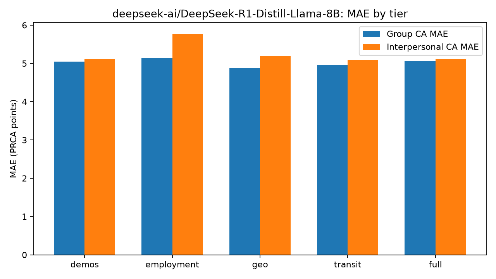
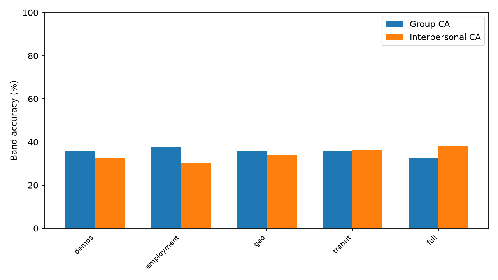
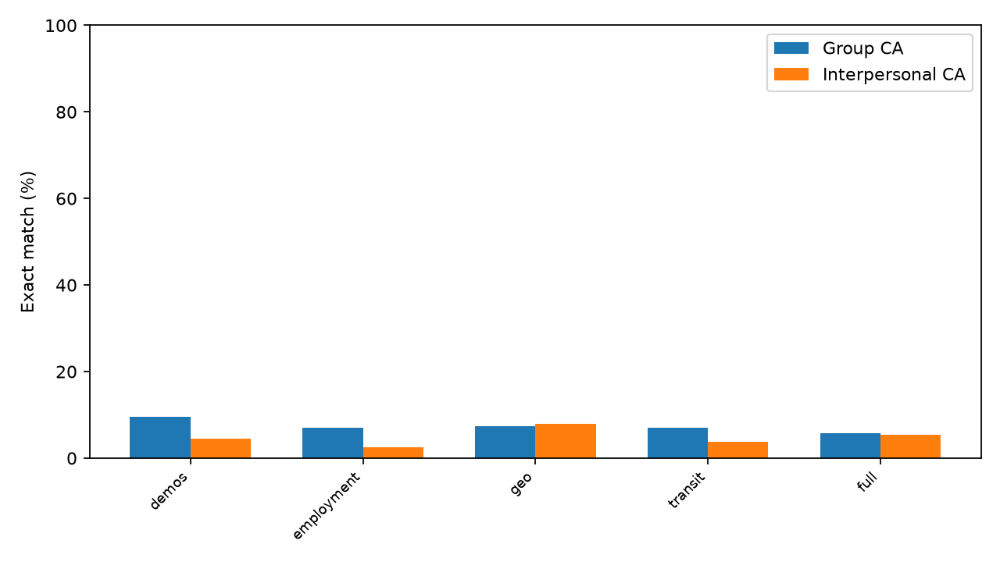

# PSYCH 755 — vLLM Results Report: `deepseek-ai/DeepSeek-R1-Distill-Llama-8B`
**Model tag:** `deepseek_r1_distill_llama8b_v2`
**Sample:** N=241 × 5 tiers = 1205 prompts
**Parse success:** 1203/1205 (99.8%)
**Quantization:** fp8
**Throughput:** None samples/s · wall Nones
**Export:** `psych755_vllm_deepseek_r1_distill_llama8b_v2_full_cohort_20260730_2213`
Prompt v2 packaging + v2_enhanced decode (temp=0.3, seed=42, guided JSON).
---
## Overall metrics
| Metric | Value |
|---|---|
| MAE group | 5.02 |
| MAE interpersonal | 5.26 |
| Exact acc group | 7.4% |
| Exact acc interpersonal | 4.8% |
| Band acc group | 35.7% |
| Band acc interpersonal | 34.2% |
## RQ deltas (vs demos)
- **RQ1 employment:** group MAE 5.05 → 5.15; IP 5.12 → 5.78
- **RQ2 transit:** group MAE 5.05 → 4.97; IP 5.12 → 5.09; IP band 32.4% → 36.2%
- **RQ3 full:** group MAE 5.07; group band 36.1% → 32.8%; IP MAE 5.12 → 5.11
## Metrics by tier
tier n_predictions n_with_ground_truth mae_group mae_interpersonal mean_error_group mean_error_interpersonal exact_acc_group mean_norm_score_distance_group band_acc_group n_band_group mean_band_distance_group mean_norm_band_distance_group exact_acc_interpersonal mean_norm_score_distance_interpersonal band_acc_interpersonal n_band_interpersonal mean_band_distance_interpersonal mean_norm_band_distance_interpersonal
all 1205 1203 5.024106 5.258520 -0.882793 1.049044 0.073982 0.209338 0.356608 1203 0.720698 0.360349 0.048213 0.219105 0.342477 1203 0.709061 0.354530
demos 241 241 5.049793 5.116183 -1.182573 1.000000 0.095436 0.210408 0.360996 241 0.751037 0.375519 0.045643 0.213174 0.323651 241 0.701245 0.350622
employment 241 240 5.150000 5.779167 -1.291667 1.437500 0.070833 0.214583 0.379167 240 0.729167 0.364583 0.025000 0.240799 0.304167 240 0.766667 0.383333
full 241 241 5.066390 5.107884 -0.751037 0.742739 0.058091 0.211100 0.327801 241 0.742739 0.371369 0.053942 0.212828 0.381743 241 0.680498 0.340249
geo 241 241 4.887967 5.203320 -0.323651 1.419087 0.074689 0.203665 0.356846 241 0.676349 0.338174 0.078838 0.216805 0.340249 241 0.713693 0.356846
transit 241 240 4.966667 5.087500 -0.866667 0.645833 0.070833 0.206944 0.358333 240 0.704167 0.352083 0.037500 0.211979 0.362500 240 0.683333 0.341667
## Band confusion (group)
pred_band low moderate high
gt_band
low 228 419 1
moderate 105 199 1
high 92 156 2
## Band confusion (interpersonal)
pred_band low moderate high
gt_band
low 135 474 29
moderate 65 263 17
high 33 173 14
## Success checklist
| Criterion | Result |
|---|---|
| Schema-valid CA JSON | Yes (99.8%) |
| Exact digital-twin recovery | No |
| Coarse band recovery | See tier table |


